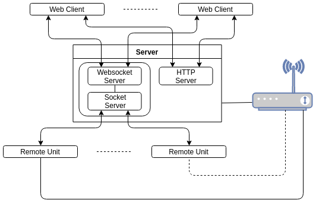
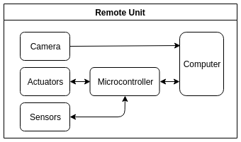
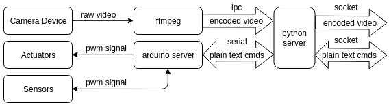
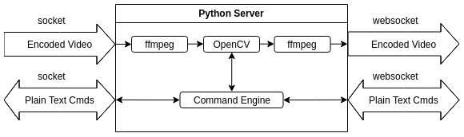
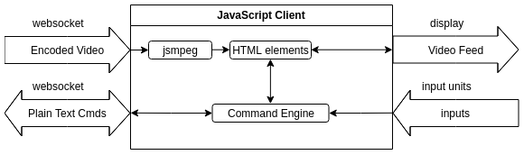

A Flexible Framework for Remote Controllable Cameras
Computer Vision
2018-2019
Emiliano Luci
Federico Trombetti
Introduction
We present a framework for the remote control of cameras through a web interface.
Each remote unit exposes its capabilities to the interface which adapts to reflect that.
The presented units let the user can control the yaw and pitch of the camera as well
as moving it around.
Introduction (1)
The units are also equipped with white LEDs for illumination and a low power Laser to annoy people.
The control of the cameras is either manual or automatic.
The system can perform simple computer vision tasks on the cameras' streams.
Architecture
The system is divided into 3 layers: the remote units, the server and the interface.

Architecture (1)
The system is such that most of the heavy computations are delegated to the central server.
This lets the remote units be extremely simple since the only complexity required is them being able to stream the video feed.
While the remote units and server being in the same network is not strictly required it is quite useful in term of latencies.
Remote Unit
The remote unit streams the camera on the network and responds to user commands that it receives from the server.

Remote Unit (1)
Each unit runs a python server which acts as a coordinator between the various data streams.

Remote Unit (2)
The raw video stream is encoded by ffmpeg to MPEG2 and encpsulated in rtp.
The encoded video is broadcast on a multicast address rtp://239.0.0.x
The unit initiates the connection with the server advertising its capabilities as well as sending it
information about the stream (basically sending it the sdp file generated by ffmpeg).
Remote Unit (3)
The commands sent from the clients are forwarded to the correct unit which then sends them
to the microcontroller via serial interface.
The microcontroller implements a simple server which parses the commands and executes them.
The microcontroller chosen for our units is an Atmega328p but the only requirement is that
it implements the protocol.
Central Server
The central server acts as a coordinator between clients and remote units. It also performs the vision tasks.

Central Server (1)
The server accepts registration requests from the remote units it then starts processing the video streams.
The server parses commands from the client and either executes them or forwards them to the destination unit.
The server performs vision tasks by using the OpenCV libraries.
Central Server (2)
The encoded video is read from the multicast address. It is decoded by ffmpeg. The raw pictures are processed by OpenCV.
The processed pictures are then encoded again by ffmpeg in the MPEG1 format and sent to the requesting clients.
Central Server (3)
The commands received by the clients are first parsed. If the command is meant to be executed by the server ( the client can request
for example to list all the avaiable remote units) the server replies immediately. Otherwise it just forwards them to the remote unit to which
the command is addressed.
All the exchanged messages are in plain text json.
As for most IoT applications the 's' stands for security.
Central Server (3)
Commands acting on a stream are global. That is the streams are shared between the clients
Commands are processed in a sequential fashion regardless of the source.
Praise Helix.
Web Client
The client initiates the connection with the central server.
The protocol defines that the client identifies itself and ask for a list of the available units.
After the clients selects a unit all successive commands will be sent to that remote unit.
Web Client (1)
The server informs the clients of the capabilities of the remote unit as well as the format of the video stream

Web Client (2)
The Web Client uses JS to decode the video stream and display it on an HTML canvas.
This limits the encoding to MPEG1 since it's mostly all it can handle.
However since anyone can implement the protocol it's possible that a future iteration may
choose from multiple encodings to make use of hardware acceleration.